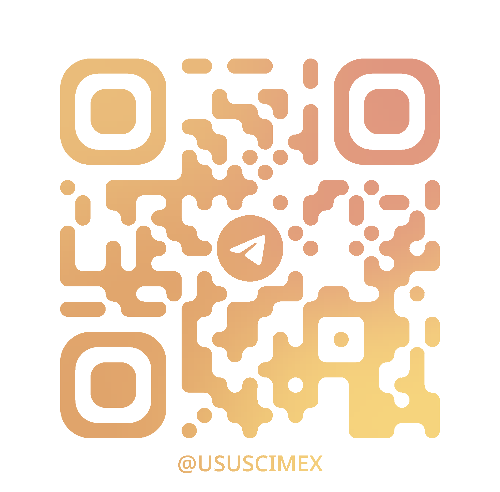

Не помнишь названия? Достаточно фразы, кадра, мелодии или короткого видео - сервис понимает воспоминание и находит фильм.
Опиши сцену словами - «военный в окопе, за кадром играет скрипка» - и получи фильмы, где это есть.
Загрузи кадр, постер или скриншот с экрана - узнаем фильм по одной картинке.
Скинь короткую нарезку до 30 секунд - найдём фильм по движущемуся фрагменту.
Напой мелодию или дай реплику героя - определим фильм по звуку.
Сердце проекта: превращать текст, картинку, видео и звук в векторы и находить ближайшие фильмы в каталоге. Именно это делает DejaView особенным.
Научить систему доставать смысл из медиа: ключевые кадры из видеонарезки, признаки из звуковой дорожки - и готовить их к поиску.
Четыре режима ввода в одном окне: набрать текст, перетащить картинку, загрузить видео или записать звук с микрофона - и красиво показать выдачу.
Карточки фильмов из TMDB, оценки и отзывы, списки «Хочу посмотреть» и «Просмотрено», профиль со статистикой.
Выдержать 600 пользователей и 100 запросов в секунду: кэширование, реплики базы, несколько экземпляров приложения.
Оформить ядро поиска как REST API с документацией OpenAPI - чтобы киноплатформы и сторонние разработчики могли встроить DejaView к себе.
Docker-окружение, CI/CD, автоматическая сборка, прогон тестов и деплой в один клик - плюс быстрый откат, если что-то пошло не так.
Находи фильмы по обрывку памяти и веди личный кинотрекер: списки, оценки, отзывы, статистика.
Сервисы могут усилить собственный поиск нашим мультимодальным движком - там, где обычный поиск по названию бессилен.
Ядро поиска доступно как REST API - встрой возможности DejaView в свой продукт за пару запросов.
DejaView - учебный проект ФИТ НГУ, этап реализации идёт сейчас. Напишите в Telegram или сканируйте код.
